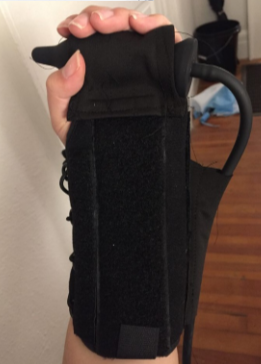

During my senior year (2018-2019), I developed a dyanmic brace for the treatment of hand spasticity. I am working on acquiring a patent for the design. If you would like more details, I would be happy to share more upon request!
External chassis of the device provides electrical isolation for patient safety.
Chassis interior for electrical components.
Completed circuit including: air pump for inflation, solenoid valve for deflation, and a pressure transducer to measure pressure in the silicone ball.

Final product; an iphone application activates passive stretching of the hand.